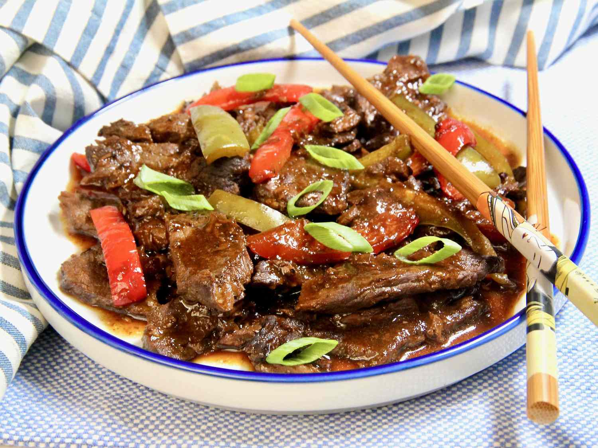

Steak

Description
A delicious pepper steak recipe served with boiled white rice — easy and made from items I've already got in my cupboards.
My mother clipped this recipe from somewhere and it became a specialty of mine; however, I've been unable to find the original source.
Ingredients
- 1 pound beef top sirloin steak
- 1/4 cup soy sauce
- 2 Tbs white sugar
- 2 Tbs cornstarch
- 1/2 tsp ground ginger
- 3 Tbs vegetable oil
- 1 chopped red onion
- 1 chopped green bell pepper
- 2 wedged tomatoes
Steps
- Slice steak: Into 1/2-inch thick slices across the grain.
- Whisk together: Soy sauce, sugar, cornstarch, and ginger in a bowl until the sugar has dissolved and the mixture is smooth. Place steak slices into the marinade, and stir until well-coated.
- Heat 1 tablespoon vegetable oil in a wok or large skillet over medium-high heat, and cook steak strips in batches in hot oil so as not to crowd the pan. Cook and stir until well-browned, about 3 minutes, and remove steak from the wok to a bowl. Repeat with remaining steak, adding more oil as needed, and set the cooked meat aside..
- Return cooked steak strips to the hot wok, and stir in onion. Toss steak and onion together until onion begins to soften, about 2 minutes, then stir in green pepper.
- Cook and stir the mixture: Until peppers have turned bright green and started to become tender, about 2 minutes more, then add tomatoes.
- Stir everything together to mix and blend flavors, and serve.
Home